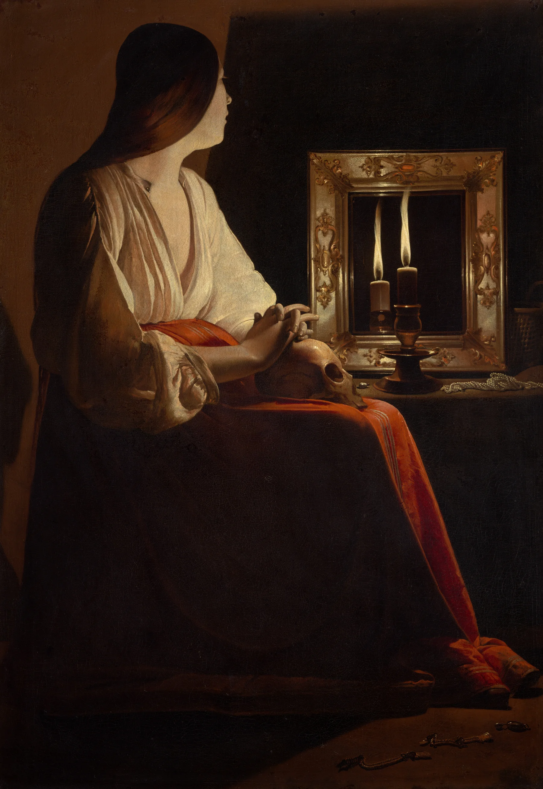

Add something real here. A thought you wouldn't put on the main page.
What you're actually thinking about. What you're reading. What scares you or excites you.
I work where data meets machines. Datasets that teach a robot to read a hand in motion,
rigs that capture the motion in the first place, and the quiet curation in between:
deciding what is worth learning from. The road to general intelligence is mostly
unglamorous. Labels, calibration, tolerances. I would rather make the data right than
make the model loud.
Set line by line in JavaScript around the drawing's outline. Pick it up.
Nike of SamothraceLouvre, ParisLaocoön and His SonsVatican MuseumsDiscobolusPalazzo Massimo, RomeVenus de MiloLouvre, ParisApollo BelvedereVatican MuseumsArtemision BronzeNational Archaeological Museum, AthensDying GaulCapitoline Museums, RomeBarberini FaunGlyptothek, MunichFarnese HerculesArchaeological Museum, NaplesKritios BoyAcropolis Museum, AthensRiace Bronze AReggio CalabriaHermes of PraxitelesArchaeological Museum, Olympia
They gave it to the winner full of oil, pressed from the sacred olives of Athena that grew in the groves outside the city, and a man who won the foot race or the wrestling might carry home enough of these jars to keep his family for a generation. Every one was made to the same measure, as the law required, and every one was painted in the old way, black figures on the red of the clay, long after the potters of the Kerameikos had learned to do the reverse, because a prize should look like the prizes of grandfathers. On the far side the goddess strides out with her spear raised and her shield on her arm, between two columns topped with cockerels. On this side men fight with their hands and their feet. It is the pankration, the all-in fight, where anything was allowed except biting and gouging, and a judge in a long cloak stands over them with a forked rod, ready to bring it down on the one who cheats. One man has caught the other by the leg; the other has his fist drawn back. Nobody yet knows who will win. The clay was dug beside the river and left out to weather, then washed and settled and kneaded until it was smooth, and thrown on the wheel in pieces, foot and body and neck, that were joined when they were leather-hard. The painter laid the figures on in a slip of the finest clay, which looks no different from the rest until the kiln does its work: a fire with air, a fire starved of air, then air again, and the slip stays black and glossy while the body turns back to orange. Then he scratched the muscles and the folds of the cloak in with a needle, line by line, so that the red shows through like blood under skin. Across the city the athletes trained naked in the gymnasium and oiled themselves before and scraped themselves clean after, and the oil came from the same trees. The winner's name was cried out in the stadium and cut into stone, and he was given a crown of olive and these jars by the dozen, sealed with clay and stamped. Some were sold abroad, which was allowed, and went on ships to Etruria and the Black Sea, packed in straw, and were buried with men who had never seen Athens. The oil was used long ago, for lamps and for cooking, for bread and for the bodies of the dead, and the winner's name has gone with it. What is left is the clay, which does not rot, and the black that the fire fixed in it, and the fight, still undecided: two men locked together under the judge's raised rod for two and a half thousand years, waiting for someone to fall.
At Jingdezhen the whole town lived by the colour of the smoke. There were so many kilns, and they were fired so often, that travellers said the place looked from the hills like a city under siege, and at night the sky over the river glowed red. The clay came down from the high ridge at Gaoling, white as rice, and the stone that made it glassy came from another hill; both were crushed by water wheels, washed, settled in pits and left to age in the dark until they were smooth as skin. No one made a pot alone. One man threw the gourd in two halves on a wheel turned by a boy, and another joined them and trimmed the waist; one ground the cobalt, one drew the outlines, one only filled them in, another wrote the mark on the foot, and a single vase could pass through seventy pairs of hands before it was fired. The cobalt came from Persia at first, along the same roads as the horses, and later from the hills of Zhejiang. With a brush of rabbit hair the painter laid it over the raw body in vines and leaves and little hanging gourds, which wish a house full of sons, and bats among them, because the word for bat sounds like the word for luck. Nothing showed. The blue went on grey and dull as ash, and you had to trust your hand. Then the glaze, poured on, or blown on through a tube of bamboo; then the pots set in saggars of coarse clay, stacked in columns to the roof of the kiln, and the door bricked up and the fire lit with pine. For three days and two nights the stokers fed it and watched the flame through a spyhole, judging by its colour, white with yellow at the heart, when the heat was enough to turn sand to glass. Then they let it die and waited for the bricks to cool. When the saggars were cracked open the colour had arrived, deep and wet as the sea at evening, under a skin of ice that will never melt. The best went north on the Grand Canal to the palace; the rest went south to Canton, and from there in the holds of the Dutch ships to Amsterdam, packed in tea, where people who had never seen a gourd vine paid a fortune for the picture of one and set it on a high shelf in a cold room by the sea. This one came to New York in the end. It has stood there through every winter since, and the bats still hang among the leaves, and the luck they promise has not yet been used up.
turn
Someone cut forty-five little stamps: a running man, a plumed head, a child, a fish, a bird in flight, a ship, a hide, a comb, a flower with eight petals. Then one day, in a palace above the plain of the Mesara, they took a disc of the finest clay while it was still soft, drew a spiral on it with a point, and began at the rim. Each sign went in under a thumb, one after another, and every word was closed with a short stroke across the line. They turned the disc as they worked, round and in, round and in, until they came to the middle and the clay was full; then they turned it over and filled the other side. Afterwards it was fired as hard as a tile, and kept. That was more than three and a half thousand years ago. It lay in the ruins of the palace until the summer of 1908, when an Italian archaeologist lifted it out of a basement room beside a broken tablet, and since then it has been read by everyone and by no one. Two hundred and forty-two signs in sixty-one words, and not one of them understood. It has been called a hymn to a mother goddess, a roll of soldiers, a calendar, a contract, a board game, and a fake. Nobody has found another page made with those stamps, or the stamps themselves, though they are the oldest movable type we know of, cut so that a hand could say the same thing again and again. Perhaps they only ever said this. But somebody once held it as you are holding this one, and turned it slowly, and the words came round to them one at a time under the thumb, and they knew exactly what it said.
And this too shall pass
A king, the story goes, asked his wise men for a ring that would make a sad man glad and a glad man sad. They argued for a year. Then the youngest went down to the market, to an old engraver who worked in a doorway with a lamp and a file, and came back with a plain band of bronze. The king turned it in his fingers and read what was cut round the edge, and was quiet for a long time. He wore it at his wedding and at his son's burial, at the signing of the peace and on the night the city burned, on his good days and on his bad ones, and it was true on all of them. When he was old he gave it to a beggar at the gate, who sold it for bread.
pretext-gloss
Cap. I.Ecclesiastes117
The words of the Preacher, the son of David, king in Jerusalem. Vanity of vanities, saith the Preacher, vanity of vanities; all is vanity. What profit hath a man of all his labour which he taketh under the sun?
One generation passeth away, and another generation cometh: but the earth abideth for ever. The sun also ariseth, and the sun goeth down, and hasteth to his place where he arose. The wind goeth toward the south, and turneth about unto the north; it whirleth about continually, and the wind returneth again according to his circuits. All the rivers run into the sea; yet the sea is not full; unto the place from whence the rivers come, thither they return again.
All things are full of labour; man cannot utter it: the eye is not satisfied with seeing, nor the ear filled with hearing. The thing that hath been, it is that which shall be; and that which is done is that which shall be done: and there is no new thing under the sun. Is there any thing whereof it may be said, See, this is new? it hath been already of old time, which was before us. There is no remembrance of former things; neither shall there be any remembrance of things that are to come with those that shall come after.
Lapis
HOSPES QVOD DEICO PAVLLVM EST ASTA AC PELLEGEStranger, what I have to say is short: stop and read it through.
HEIC EST SEPVLCRVM HAV PVLCRVM PVLCRAI FEMINAEHere is the unlovely tomb of a lovely woman.
NOMEN PARENTES NOMINARVNT CLAVDIAMHer parents named her Claudia.
SVOM MAREITVM CORDE DEILEXIT SOVOShe loved her husband with all her heart.
GNATOS DVOS CREAVIT HORVNC ALTERVMShe bore two sons, and of them she leaves one
IN TERRA LINQVIT ALIVM SVB TERRA LOCATon the earth; the other she has laid beneath it.
SERMONE LEPIDO TVM AVTEM INCESSV COMMODOShe was charming in speech, and graceful in her walk.
DOMVM SERVAVIT LANAM FECIT DIXI ABEIShe kept the house. She worked the wool. I have spoken. Go on your way.
M AGRIPPA L FMarcus Agrippa, son of Lucius,
COS TERTIVMconsul for the third time,
FECITmade this.
404
Broken, and mended
kintsugi
Moodboard
Hagia Sophia · Constantinople
Gold under glass
A gold tessera is a sandwich. The glassmaker poured out a cake of molten glass, usually with a little green or amber in it, and while it was still warm laid a leaf of gold across it, beaten so thin that a breath would lift it. Over the leaf went a second skin of clear glass, much thinner, which Italian workshops still call the cartellina, the little card: sometimes blown as a bubble and cut open, sometimes poured. The whole was put back in the furnace until the two glasses fused and the gold was sealed between them, safe from the air and from a thousand years of lamp smoke. When it had cooled, the cake was set on a small iron blade fixed in a block, the hardie, and broken with a hammer into cubes about the size of a fingernail. Every cube in the vaults of Ravenna and Constantinople went under that hammer one at a time.
The setters worked a patch at a time, as much wet lime plaster as they could fill before it went hard, over a drawing brushed onto the coat beneath. They pressed each cube in with a thumb, and they did not press them flat. In a gold ground the cubes lean, forward, back, to one side, none quite in line with its neighbour, and the joints between them are left open so that each one meets the light by itself. High in a vault the field was often tipped down toward the floor, where the people stood. None of this survives in a photograph, which is taken in one light from one place. It is a surface made for an eye that moves.
It was lit by oil lamps hung on chains and by candles carried in procession, small flames that moved, and by people who moved under them. Walk the length of the nave with a taper and the wall answers cube by cube: one flares and goes out, the next takes it up, and a spark seems to keep pace beside you through the gold, always just ahead. Procopius, describing Justinian's new church in Constantinople, wrote that you would think the place was not lit from outside by the sun, but that the light was born inside it. He was looking at gold that had been set to do exactly that.
In Hagia Sophia, seven centuries later, the setters laid the ground behind this face in overlapping fans, like the scales of a fish, so that even the empty gold has a grain. Most of these churches face east, and the apse is the first part of them the morning finds. Before sunrise the gold is a dull brown under the lamps. Then a low, level light comes in through the east windows and across the marble floor, and the gold above takes it at a glancing angle from below, the angle the setters tipped it to meet, so that every cube sends a little of the day back down into the church. The night office was timed to end at first light, with the hymn that begins Glory to you who have shown us the light, and its last verses were sung under a vault that was slowly catching. By mid morning the sun is high, the angle has passed, and the gold settles back to a warm and even glow.
On paper
Good writing paper was once made of rags: worn linen shirts and bedsheets, left in damp heaps until they rotted soft, then beaten for hours in a trough of water until the fibres came apart, lifted on a wire mould and pressed between felts. Hold such a sheet to the light and you can still see the mould in it, fine lines close together and stronger ones an inch apart. Rag paper does not flare like newsprint. Put a corner to a flame and it smoulders. The heat runs ahead of the fire and browns the sheet as the cellulose gives up its water; then a thin edge of embers creeps forward, faster along the fibres than across them, and leaves behind a black skin of carbon that shrinks and cracks like glaze. The carbon burns more slowly still, and what is left at the end is ash, the little mineral the fibres held and the chalk the papermaker added: grey, nearly weightless, keeping the shape of the page until a breath lifts it.
Hollins Farm, 3rd October
Dear Nell,
The pears are in, the light goes by six, and the swallows left on Tuesday, all at once, the way they do. It seems the season for saying things.
When you came to help with the lambing that first spring, I learned the sound of your step on the yard stones before I learned your face. I have listened for it ever since. I never said so, because you had Tom, and then the children, and because it never asked for anything. It was only true, and I wanted one other person to know it, once.
Don't answer this. Read it at the kitchen table, put it in the range, and let us go on as we were: the eggs on Fridays, the crossword over the wall.
With my love, which is old and quiet,
Alice
Most letters of this kind were burned, as they asked to be. Cassandra Austen, late in her life, burned the greater part of her sister's letters and cut passages out of others. Dickens made a bonfire of twenty years of his correspondence in the field at Gad's Hill, and his boys roasted onions in the ashes. Others were kept against instructions, in a drawer, under the lining paper, folded in three along creases that went brown. Fire is less thorough than it looks. Iron-gall ink leaves its iron behind when the paper goes, and on the grey ash of a burned page the writing can often still be read, rust on ash, for as long as no one touches it.
An essay on glass
The Colour on the Floor
On ash and sand, flashed ruby and silver stain, and the light a window lets fall across the stones.
On a clear morning in a church with old glass, the window is only half the work. The other half lies on the floor: a patch of colour thrown down across the stones, ruby and blue and straw-yellow, leaning the way the sun leans and stretched long by its lowness. Close under the wall you can follow the lead lines in it and almost make out a figure. A few paces further out the lines have gone, and the colours have run together into pools, as if someone had spilt them there and walked away.
Ash and sand
The glass began in the forest. Theophilus, a monk who wrote down the crafts of his workshop early in the twelfth century, tells the glassmaker to take two parts of beechwood ash to one of sand, washed clean of earth and stones, and melt them together in a pot of clay. The ash gave potash, which brings the melting point of sand down within reach of a wood fire. It also made a softer, less stable glass than the Romans’ soda glass, which is why the outer face of so many medieval windows is pitted and crusted like the top of a loaf. Colour went into the pot with the batch: cobalt for blue, copper for green, manganese for purple, iron for the yellows and the murky greens, so that each colour runs right through the sheet. Glaziers still call it pot-metal.
A flat sheet started as a bubble. For muff glass the blower swung a long gather into a cylinder, cut off its ends, slit it down one side and laid it back in the furnace to open out flat; for crown glass, later, he spun the bubble on an iron rod until it flashed open into a wide disc, thick in the middle where the rod had been. Either way it came out uneven, full of small seeds of air and streaks where the batch had not quite mixed, and every flaw changes the light that passes through. Red was the hard one. Copper ruby is so dense that a sheet thick enough to handle looks black against the sky, so it was laid on as a skin: a gather of clear glass dipped into the red and blown out with it, clear on one face and flashed with red on the other. Old ruby seen close is dozens of thin layers wavering like the grain of wood, and it throws the deepest colour in the window.
Paint does not colour the light. It stops it.
Iron, paint and lead
The design was drawn full size on a whitewashed table, every piece and every lead line, and the glass laid over it to be cut. There was no diamond to score it. The glazier drew a red-hot iron along the line he wanted, wetted it so the glass cracked after the iron, then nibbled the edge to shape with a hooked grozing iron, which leaves a row of small bites you can still see on old pieces. Faces, hands, folds of cloth and the leaves of the border were painted on in grisaille, a paste of ground glass and iron oxide in wine or gum, and fired in a kiln until it fused into the surface. That is why a saint’s features arrive on the floor as fine brown shadows and not as colour.
Around 1300 someone found that a compound of silver, painted on the back of a clear piece and fired, turned the glass yellow, from the pale of a lemon to a deep orange depending on the heat. Silver stain changed the trade: a golden crown and a white face could now be one piece, with no lead between them, and fourteenth-century windows grew lighter and more silvery. Then every piece was fitted into cames, strips of cast lead grooved on both sides to take the glass, soldered with tin at each joint and braced with iron bars. The heavy black lines that hold a window together are part of its drawing.
It is often said that old windows are thicker at the bottom because glass is a slow liquid that has sagged over the centuries. It isn’t, and it hasn’t. Glass at the temperature of a church is so stiff that it would take far longer than the age of the universe to move a visible distance; Roman cups and old telescope lenses have kept their shapes. Panes are thicker along one edge because muff and crown glass came out uneven, and a sensible glazier set the heavy edge at the bottom. Now and then a piece turns up with its thick edge at the top, set by one who wasn’t.
And then the light moves. A church is built with its altar to the east, so the morning sun comes in through the choir and lays its colours down the length of the nave, long and pale. By noon the sun is high in the south and the patches are short and bright, close under the aisle windows, the blue and the red lying on the stone like rugs. Through the afternoon they lengthen again and swing toward the east, climbing the bases of the piers and folding over the step of a pew, and when a cloud crosses the sun they fade and soften and then come back exactly as they were. Nobody designed that part. The glaziers made the window to be looked at; the floor was a gift.
Fin

Before electricity
A Few Feet of Light
For most of history the light people read by was rendered fat. A tallow candle was dipped, layer on layer, from melted mutton or beef suet. It smoked, it smelled of the kitchen, it slumped in a warm room and ran down its own side, and its twisted cotton wick did not burn away but stood up into the flame and charred, so that within a quarter of an hour the light had sunk to a dull and smoking red. Someone had to trim it with snuffers, a pair of scissors with a little box on one blade to catch the hot end; to snuff a candle meant then not to put it out but to cut it back so that it burned bright again. Beeswax needed far less of this. It burned clear and steady, smelled faintly of honey, and cost several times as much, so it went to altars, courts and the rich, and everyone else sat in the smell of tallow.
A candle is a smaller light than we remember. The unit of luminous intensity, the candela, is still roughly one candle’s worth, and it falls away with the square of the distance: a page held a foot from the flame gets about ten lux, at three feet barely one, where an office desk today gets five hundred. So a candle did not light a room so much as a few feet of it. Inside that circle were the hands, the page, a face. Outside it the room went on as a collection of rumours: the glint of a jug, the pale edge of a door, the dark.
Georges de La Tour, working in Lorraine through the war, plague and famine of the 1630s and 40s, painted that circle again and again, and was strangely shy of the flame at its centre. Often he hid it: behind a raised hand whose fingers glow red where the light comes through them, behind a sleeve, a book, the shoulder of a child, so that we see only what it touches. When he did show it, it stands tall and perfectly still, a pale tongue with a dark heart. Here he paints it twice, the candle on the table and its double in the black glass behind, both as motionless as a flame only is in a shut room at night.
Reading by one candle had its own manners. You held the book close and the candle closer, turned the page toward the flame, and kept still, because a candle in still air hardly moves: the hot gas rising off it draws a steady current in at its foot, and that current stands the flame upright and long. It is a draught that makes it flicker. A door in another room, a sleeve passing, someone laughing too near, and the flame lies over and shortens, the light on the page shudders and drops, and if it goes too far a thread of grey smoke climbs from the wick and the room is gone until someone brings a light from the fire.